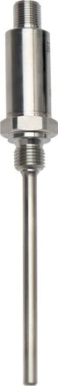

Tín hiệu điện trở từ Pt100 (RTD) khó truyền xa và dễ nhiễu. Temperature transmitter compact (Temperaturmessumformer) WIKA chuyển tín hiệu Pt100 sang 4–20 mA ngay trong đầu củ (connection head) cảm biến, giúp truyền tín hiệu ổn định về hệ thống. Fast Group Engineering là đại lý cung cấp hàng chính hãng WIKA (Germany) tại Việt Nam.

Gợi ý chọn nhanh
- Cần đọc nhiệt độ tại chỗ hoặc đưa tín hiệu nhiệt về hệ thống.
- Cần chọn bimetal, RTD Pt100, transmitter hoặc thermowell.
- Cần thay thế theo chiều dài thân nhúng và kiểu chân.
- Dải nhiệt, chiều dài stem và đường kính thân.
- Kiểu chân, ren, vật liệu và môi chất.
- 2/3/4-wire, output 4-20 mA hoặc yêu cầu thermowell.
- Danh mục đồng hồ nhiệt độ WIKA.
- Bài bimetal thermometer.
- Bài RTD Pt100 và thermowell.
Tóm tắt nhanh
- Transmitter lắp trong đầu củ biến tín hiệu Pt100 → 4–20 mA tuyến tính theo dải nhiệt.
- Lợi ích: chống nhiễu, truyền xa, dễ đấu PLC/DCS, giảm sai số dây dẫn.
- Loại head-mount (gắn trong đầu củ) rất phổ biến và gọn.
- Có bản cài dải qua phần mềm hoặc bản cài sẵn.

Vì sao cần temperature transmitter?
Tín hiệu Pt100 là điện trở (Ω), nhạy với điện trở dây và nhiễu khi truyền xa. Chuyển sang 4–20 mA ngay tại đầu cảm biến giúp:
- Chống nhiễu trên đường dây dài.
- Live zero (4 mA = đầu thang) → phát hiện đứt dây.
- Đấu trực tiếp vào ngõ vào analog của PLC/DCS.
- Giảm ảnh hưởng điện trở dây dẫn.
4–20 mA hoạt động thế nào và vì sao "live zero" quan trọng?
Transmitter ánh xạ dải nhiệt bạn cài thành dòng điện tuyến tính: đầu thang = 4 mA, cuối thang = 20 mA. Ví dụ cài 0…150°C thì 0°C cho 4 mA, 75°C cho 12 mA, 150°C cho 20 mA. Điểm hay của việc dùng 4 mA làm mức "0" (live zero) thay vì 0 mA là: nếu dây đứt hay transmitter mất nguồn, dòng tụt về 0 mA — PLC nhận ra ngay đây là lỗi, chứ không nhầm thành "nhiệt độ = đầu thang". Đây là cơ chế an toàn quan trọng mà tín hiệu điện trở thô của Pt100 không có. Ngoài ra, dòng 4–20 mA gần như miễn nhiễm với sụt áp trên dây dài, khác hẳn tín hiệu điện trở.
Cài dải (scaling) — chọn khoảng đo hợp lý
Nên cài dải nhiệt sát với khoảng vận hành thực tế thay vì để quá rộng. Nếu quá trình chạy quanh 60–90°C mà cài dải 0…600°C, thì toàn bộ vùng làm việc chỉ chiếm một phần nhỏ của thang 4–20 mA, khiến độ phân giải kém và khó phát hiện thay đổi nhỏ. Cài dải hẹp và đúng vùng làm việc giúp mỗi mA tương ứng khoảng nhiệt nhỏ hơn, đọc mịn và điều khiển nhạy hơn. Bản lập trình được cho phép chỉnh lại dải này qua phần mềm khi nhu cầu thay đổi, rất linh hoạt cho bảo trì.
Đặt transmitter ở field hay trong tủ?
Nguyên tắc: số hóa tín hiệu càng gần cảm biến càng tốt. Đặt transmitter head-mount ngay tại đầu củ nghĩa là đoạn dây mang tín hiệu điện trở nhạy nhiễu được rút ngắn tối đa, phần còn lại là 4–20 mA khỏe khoắn chạy về tủ. Chỉ chọn rail-mount trong tủ khi cần gom nhiều kênh để bảo trì tập trung, hoặc khi môi trường tại field quá khắc nghiệt cho điện tử. Với đa số điểm đo rời, head-mount compact là lựa chọn gọn và tối ưu.
Head-mount vs Rail-mount
| Loại | Vị trí | Ưu điểm |
|---|---|---|
| Head-mount | Trong đầu củ cảm biến | Gọn, tín hiệu số hóa ngay tại field |
| Rail-mount (DIN) | Trong tủ điều khiển | Tập trung, dễ bảo trì nhiều kênh |
Cho cảm biến rời tại field, head-mount compact thường tối ưu.
Thông số cần quan tâm
- Loại đầu vào: Pt100 (2/3/4-wire), có thể hỗ trợ thermocouple.
- Dải nhiệt cài đặt (scaling) tương ứng 4–20 mA.
- Độ chính xác của transmitter.
- Nguồn cấp (thường 24 VDC, loop-powered 2-wire).
- Cách cài dải: cài sẵn theo đặt hàng hay lập trình được.
Cách chọn (Checklist)
- [ ] Cảm biến đầu vào: Pt100 3-wire/4-wire.
- [ ] Dải nhiệt cần scale (vd 0…150°C ↔ 4–20 mA).
- [ ] Head-mount hay rail-mount.
- [ ] Độ chính xác yêu cầu.
- [ ] Nguồn cấp & cấp bảo vệ.
- [ ] Có yêu cầu Ex không.
Ứng dụng
- Đo nhiệt độ đường ống/bồn truyền về PLC/DCS.
- Nâng cấp cảm biến Pt100 hiện có để chống nhiễu.
- Hệ thống giám sát nhiệt tập trung nhiều điểm.
FAQ
Có cần transmitter nếu đã có Pt100? Nếu đưa tín hiệu về xa/PLC, transmitter giúp ổn định và chống nhiễu; đọc gần bằng bộ hiển thị điện trở thì không bắt buộc.
Cài dải nhiệt thế nào? Bản lập trình được cài qua phần mềm; bản cài sẵn đặt theo yêu cầu khi mua.
2-wire loop-powered nghĩa là gì? Dùng chung 2 dây cho cả nguồn và tín hiệu 4–20 mA — đơn giản, ít dây.
Sai lầm thường gặp
- Cài dải quá rộng: vùng làm việc chiếm phần nhỏ thang đo, độ phân giải kém.
- Đặt transmitter xa cảm biến: đoạn dây điện trở dài dễ nhiễu; nên head-mount ngay đầu củ.
- Dùng 2-wire Pt100 vào transmitter khi dây dài: điện trở dây gây sai; ưu tiên 3/4-wire.
- Quên yêu cầu Ex ở vùng nguy hiểm: phải chọn bản Ex ia phù hợp phân vùng.
- Nhầm loại đầu vào: transmitter cấu hình cho Pt100 khác với cho thermocouple; xác định đúng cảm biến.
Ví dụ chọn nhanh
Đo nhiệt nước nóng đường ống, đưa về PLC cách khoảng 50 m: dùng cảm biến Pt100 3-wire, transmitter head-mount cài dải 0…150°C ↔ 4–20 mA, nguồn loop-powered 24 VDC, lắp qua thermowell. Vùng có nguy cơ cháy nổ: chọn thêm bản Ex ia. Cần chỉnh lại dải theo mùa/công nghệ: chọn bản lập trình được để cài lại qua phần mềm. Cùng nền tảng, chỉ thay kiểu lắp, dải scale và chứng nhận Ex theo điều kiện thực tế.
Kết hợp với bộ hiển thị & điều khiển
Sau khi có tín hiệu 4–20 mA sạch, bạn có thể đưa vào bộ hiển thị gắn tủ để đọc tại chỗ, vào bộ điều khiển nhiệt độ để đóng/ngắt gia nhiệt, hoặc vào PLC/DCS để ghi và giám sát tập trung. Chuỗi điển hình là: Pt100 → transmitter (4–20 mA) → bộ hiển thị/điều khiển hoặc PLC. Vì tín hiệu đã chuẩn hóa, việc mở rộng hay thay thiết bị đầu cuối về sau rất linh hoạt mà không phải đụng tới cảm biến.
Transmitter có tự bù sai số Pt100 không?
Transmitter tuyến tính hóa và ổn định tín hiệu, nhưng độ chính xác tổng vẫn phụ thuộc cả class của Pt100 lẫn độ chính xác transmitter. Chọn đồng bộ cả hai cho vòng đo quan trọng.
Có hỗ trợ giao thức số (HART) không?
Một số transmitter WIKA hỗ trợ HART chồng trên 4–20 mA, cho phép cấu hình và đọc chẩn đoán từ xa. Nêu nhu cầu này khi hỏi giá để chọn đúng model.
Cần tư vấn hoặc báo giá temperature transmitter WIKA?
Gửi loại cảm biến, dải nhiệt scale, head/rail-mount để nhận báo giá trong 24h.
- Email: minhduc@fastgroup.vn · Zalo: (+84) 938 888 958
Fast Group Engineering – đại lý cung cấp hàng chính hãng WIKA (Germany) tại Việt Nam.
Bài liên quan: [RTD Pt100 WIKA] · [Bộ hiển thị 4–20 mA gắn tủ] · [Bộ điều khiển nhiệt độ gắn tủ] · [Thermowell/Schutzrohr]